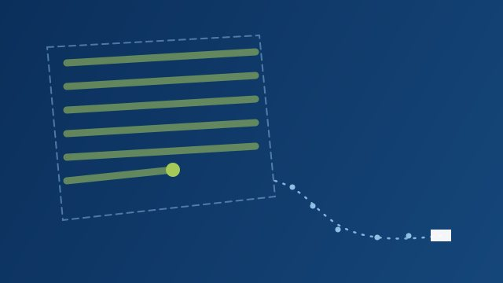
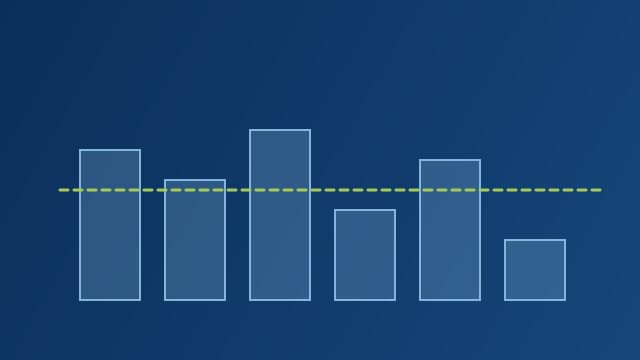
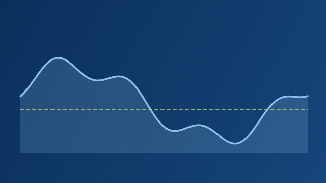

Radiografía Focalizada
Para una pregunta o problema específico.
Diagnóstico sustentado, drivers, oportunidades y prioridades de intervención.
Más perspectiva. Mejores decisiones.
Convierta datos en decisiones
y decisiones en resultados.
Integramos operación, finanzas, ingeniería y datos para identificar dónde se está perdiendo valor, diseñar soluciones y convertir la mejora en resultados medibles.
Campo | Datos | Estrategia | Resultados
El problema no suele estar en un solo lugar
Personas, activos, materiales, procesos, finanzas y datos están conectados. Su gestión también debería estarlo.
Un resultado se explica por los procesos que lo producen; los procesos, por las personas, los activos y los materiales que usan; y todo ello, por un plan con estándares y por datos que permitan verlo. El costo, la caja y el valor atraviesan cada capa.
Prisma integra estas perspectivas para entender el desempeño como un sistema.
Así trabaja Prisma
No comenzamos recomendando soluciones.
Comenzamos construyendo evidencia.
Identificamos desviaciones, restricciones y oportunidades a partir de información operacional, financiera y de campo.
Convertimos los hallazgos en soluciones técnicamente viables y económicamente justificadas.
Traducimos el diseño en responsables, acciones, estándares e indicadores.
Gestionamos por excepción: qué se desvió, cuánto importa, quién debe actuar y cuándo.
Validamos resultados, capturamos aprendizaje y convertimos las mejoras comprobadas en nuevos estándares.
Nuestros servicios
No vendemos horas de consultoría.
Construimos capacidad de decisión.
Para una pregunta o problema específico.
Diagnóstico sustentado, drivers, oportunidades y prioridades de intervención.
Para ver el desempeño completo.
Una lectura integral del desempeño y de las conexiones entre operación, recursos, costos, finanzas y gestión.
Para decidir con números.
Convertimos problemas demostrados en soluciones técnicamente viables y económicamente justificadas.
Para que la solución opere.
Acompañamos la implementación, adopción, estabilización y medición del resultado.
Para gestionar de forma permanente.
Diseñamos e instalamos una disciplina permanente para gestionar desempeño, excepciones, acciones y valor.
Las cinco formas de intervención se aplican a cualquiera de las nueve disciplinas. Por ejemplo, en activos y flota:
PRISMA Intelligence En desarrollo
Nuestra metodología se materializa en una plataforma de Performance Management que conecta indicadores, desviaciones, decisiones, acciones y resultados.
Integra en una misma vista producción, agronomía, activos y flota, mano de obra, materiales, costos y caja. La telemetría entra como evidencia de la operación, no como un mapa aparte.
PRISMA Intelligence se encuentra en desarrollo. Las pantallas muestran una interfaz conceptual con datos ilustrativos.
Conocer PRISMA IntelligenceIdentifica las desviaciones que realmente requieren atención.
Conecta cada excepción con evidencia, responsables y acciones.
Traza el resultado hasta el valor económico observado, validado y capturado.
PRISMA Data Hub · fuentes que puede integrar, sin depender de una marca
Nuestras capacidades
El valor de Prisma no está únicamente en cada capacidad.
Está en conectarlas.
Volúmenes, rendimiento, calendarios de cosecha y proceso, y la brecha entre lo proyectado y lo real.
Plan agronómico, ciclos y cumplimiento técnico en campo, leídos contra su costo y su efecto en la producción.
Maquinaria, vehículos y tecnología operacional convertidos en capacidad productiva medible.

Estándares, rendimientos, tarifas y capacidad por labor, cuadrilla y turno.
Del requerimiento al consumo: inventario, despacho, aplicación, mermas y costo de mantener existencias.

Costo por hectárea, por caja o por kilo, sus drivers, estándares y variaciones contra presupuesto.
Precio, condiciones, plazos, calidad y costo total de abastecimiento (TCO).
Liquidez, forecast de caja, cuentas por cobrar y pagar, y el efecto financiero de cada decisión operativa.

Calidad de datos, KPIs, excepciones, acciones y rutinas de gobierno que sostienen la gestión.
Activos, flota y tecnología operacional
¿Tenemos los activos correctos, disponibles en el lugar correcto, y los estamos convirtiendo eficientemente en trabajo productivo?
Tractores, pulverizadoras, implementos, camiones y vehículos livianos se analizan con la misma disciplina que la mano de obra o los materiales: desde lo que el plan necesita hasta el costo y el resultado que produce cada activo.
Cada dimensión se analiza por separado. No las combinamos en un índice único que esconda dónde está la pérdida.
Cadena de desempeño de activos
Horas disponibles → horas motor → horas productivas → hectáreas → ha/h → L/h → L/ha → costo/ha
Capacidad → disponibilidad → viajes → distancia → carga → tiempo de ciclo → combustible → costo/viaje → costo/t-km
Disponibilidad → kilómetros → viajes → propósito → utilización → combustible → costo/km
Compra → recepción → almacenamiento → despacho → activo → consumo → actividad → resultado
La telemetría es evidencia, no un mapa. Telemetría → contexto operacional → KPI → excepción → investigación → acción → resultado. Una anomalía no es una causa hasta que se investiga.
Sin depender de una marca. Trabajamos con GPS, plataformas de telemetría, controladores de aplicación, sistemas de combustible y de mantenimiento, apps de operadores y ERP, según el nivel de madurez digital de cada operación.
Programas de transformación
Siete programas. Cada uno combina los módulos de diagnóstico que su problema necesita.
Productividad, estándares, capacidad, tarifas y costo.
M2M4M6M9
Conocer programaEntender qué mueve realmente el costo y el margen.
M1M3M4M5M6M8
Conocer programaMayor previsibilidad en producción y ejecución.
M1M2M3M9
Conocer programaConvierta maquinaria y flota en capacidad productiva medible, desde la disponibilidad del activo hasta su costo.
M3M2M6M9
Conocer programaRequerimiento, compra, inventario, entrega, consumo y costo conectados.
M5M3*M7M6M9
Conocer programaOperación y flujo convertidos en decisiones de liquidez.
M5M7M6M8
Conocer programaUn sistema de gestión conectado y sostenible.
M1–M9
Conocer programaCómo medimos el valor
Prisma distingue entre potencial, capacidad liberada, ahorro, capital de trabajo, protección de margen y valor efectivamente capturado.
Nuestro objetivo no es inflar cifras de impacto. Es construir trazabilidad entre la intervención y el resultado.
Son estados sucesivos de una misma oportunidad, no montos que se suman. La línea pasa de punteada a continua a medida que la evidencia se vuelve más sólida.
Ejemplo en activos · ralentí
Reducir horas de ralentí, aumentar la disponibilidad de la maquinaria o acortar un tiempo de ciclo libera capacidad. No es ahorro hasta que esa capacidad se monetiza y Finanzas lo valida.
Dos perspectivas. Un mismo propósito.
Prisma nace de la combinación de experiencia operacional, agronómica, industrial, financiera y estratégica con una convicción: los problemas empresariales importantes rara vez pertenecen a una sola disciplina.
Cofundadora
Trayectoria ejecutiva en producción agrícola, operaciones agroindustriales, administración, presupuestos y costos, finanzas, supply chain, analítica y transformación digital.
CampoOperacionesFinanzasTecnologíaEstrategia
LinkedInCofundador
PLACEHOLDER · Perfil profesional pendiente de información (formación, trayectoria y áreas de experiencia).
LinkedInPRISMA Insights
Costos y capacidad
Control de gestión
Finanzas operativas
Performance management
Compras
Una conversación inicial puede ayudarnos a determinar si el problema requiere un diagnóstico focalizado, una revisión integral o una intervención de desempeño.
Contacto
Cuéntenos qué situación quiere analizar. Con esa información preparamos una primera conversación enfocada en su caso.